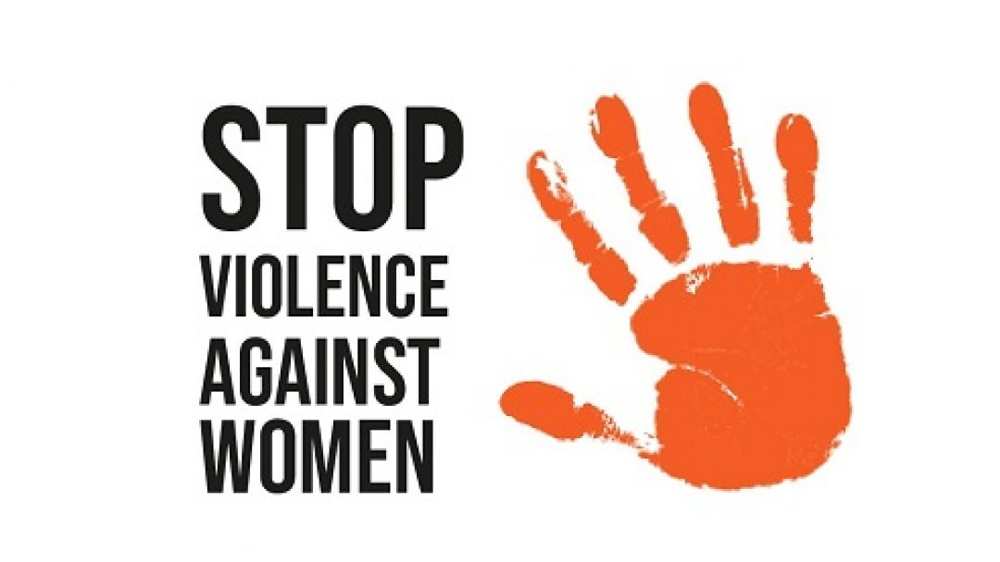
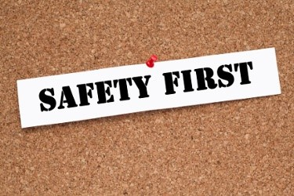

Legal Help
Reaching a safer place.
For some survivors, the criminal legal system may offer options for protection from abusive partners. The Hotline doesn’t give legal advice — nor are we legal advocates — but there may be legal resources available in your community that we can help you identify.
Contact us to talk through legal resources suited to your situation:
- Call 800.799.SAFE (7233)
- Or chat live now
Legal protections
Protective orders and restraining orders
- A protective order is a legal document intended to prohibit your partner from physically coming near you or harming or harassing you, your children, or other loved ones
- You can apply for a protective order at courthouses.
- Protective orders may be able to put a stop to physical abuse but they depend on your partner’s adherence to the law and law enforcement’s willingness to enforce the protective order. Psychological abuse is still possible.

Other legal resources
- WomensLaw.org has state-by-state information about laws including protective and restraining orders and child custody laws.
- Legal Services Corporation is an independent nonprofit established by Congress in 1974 to provide financial support for civil legal aid to low-income Americans.
- VINE allows crime victims to obtain timely and reliable information about criminal cases and the custody status of offenders 24 hours a day.
Safety and law enforcement
- If possible, identify non-law enforcement emergency service providers in your area before violence occurs to minimize interactions with the criminal legal system during an emergency.
- If you determine that it’s safe for you and others for you to do so, call 9-1-1 during a life-threatening emergency.
- For non-life threatening situations, consider contacting us 24/7 to speak confidentially with one of our expert advocates.
